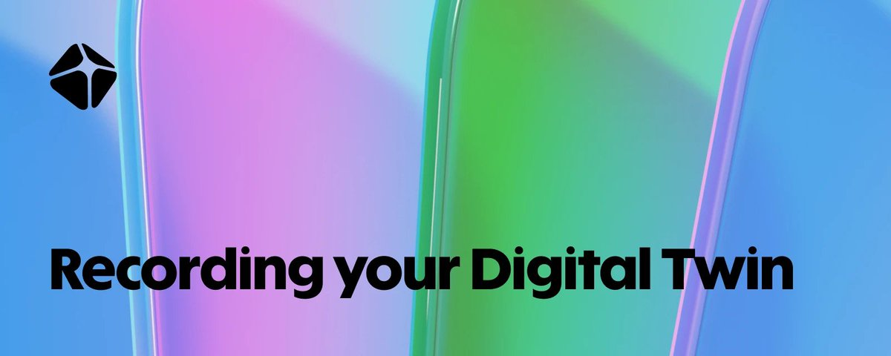
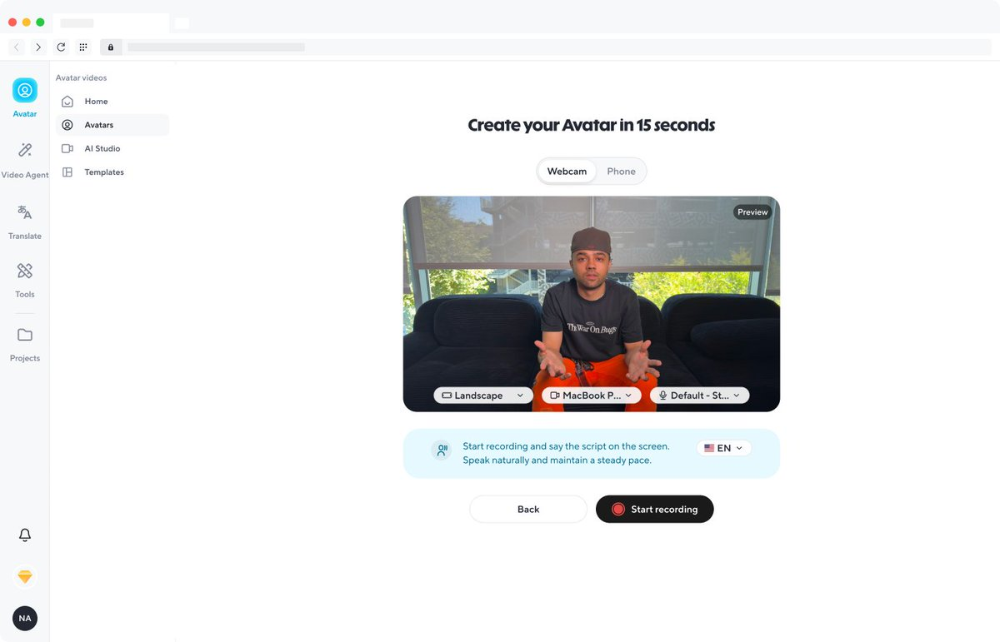
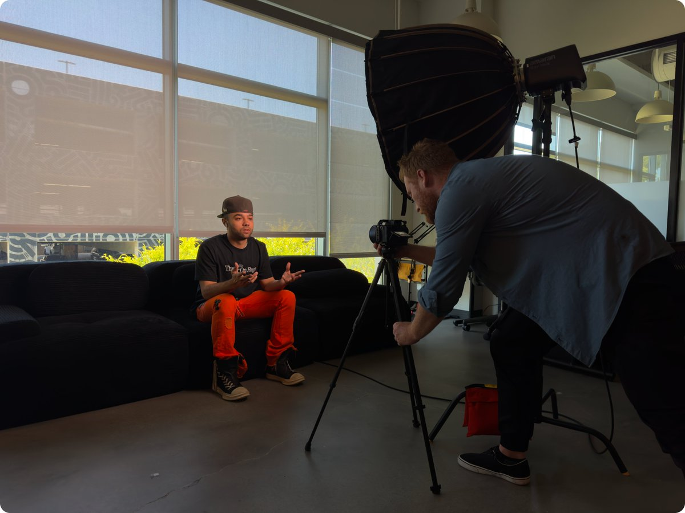
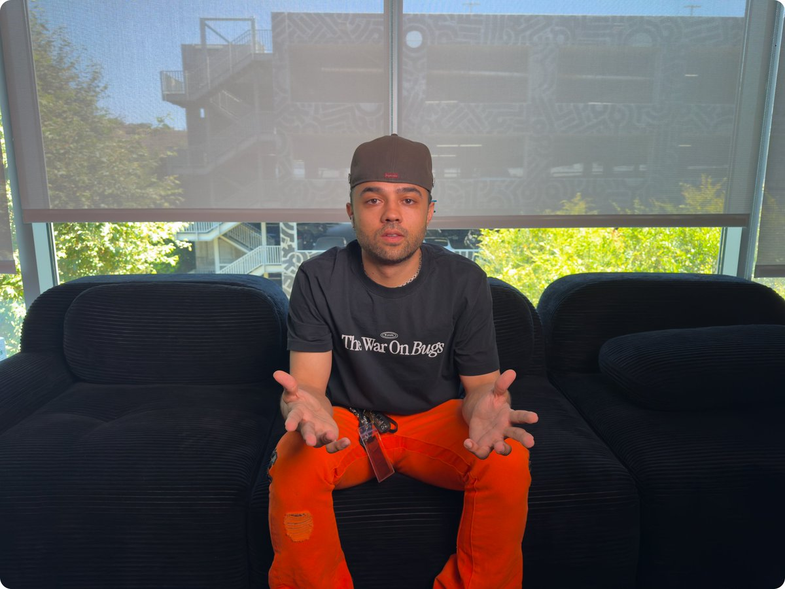
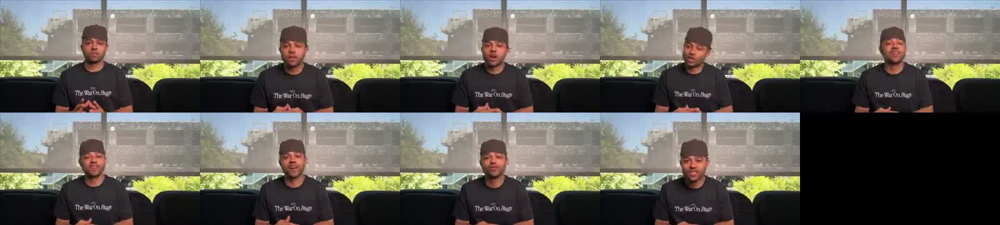

X｜HeyGen 官方：Recording your Digital Twin，15 秒訓練素材怎麼拍

HeyGen 官方 X 發布內嵌 Article〈Recording your Digital Twin〉，宣告要開始一個「HeyGen skill tree」系列：每天一個技巧，從最根本的 Digital Twin 訓練素材開始。這則適合收進 AI 學習雷達，因為它不是第三方 hype，而是 HeyGen 官方對「數字分身 footage 怎麼拍」的產品教學。
核心觀點
HeyGen 的說法很直接：Digital Twin only as good as the footage you feed it。之後所有影片都會繼承這段訓練 footage 的問題；如果素材弱，解法通常就是重拍與 retrain。
文章同時強調：15 秒 footage is all you need。但這裡的「15 秒」不是隨便錄 15 秒，而是一段符合拍攝規則的乾淨、連續、穩定素材。
App 路徑

Article 指出的 app 路徑：
- 到左側選單的 Avatars。
- 點 New Avatar。
- 選 Clone a real person，這是 Digital Twin 路徑：真實影片素材輸入，輸出一個看起來、動起來、聽起來像你的 Avatar。
- 選 capture 方式：webcam 或 phone 都可以；但 HeyGen 建議若要最佳輸出，使用專業拍攝 footage 後上傳。
截圖可見 HeyGen 介面左側有 Avatar / Video Agent / Translate / Tools / Projects 等入口；中央顯示「Create your Avatar in 15 seconds」，有 Webcam / Phone 切換、Landscape、相機/麥克風選項，以及「Start recording and say the script on the screen. Speak naturally and maintain a steady pace.」提示。
拍攝設定

HeyGen 建議：
- 用能取得的最好 camera；專業 camera + lighting 最理想，現代手機也可用。
- 至少 1080p / 30fps；4K / 60fps 更好。
- 找安靜房間，臉部要有均勻、良好的光線。
- 錄一段 continuous take，中間不要剪、不要中斷。
- 15 秒 footage 即可開始。
保存的 setup 圖可見一台相機架在三腳架上，鏡頭約在人物眼睛高度，旁邊有大型柔光燈；人物坐在沙發上，背景是辦公室窗景。這和文章 caption「one camera on a tripod at eye level, one big soft light, and a comfortable seat」一致。
說話時的三大規則

HeyGen 把 talking footage 的關鍵整理成三點：
- 全程看鏡頭，不要到處看、不要往上或往下看，因為 Avatar 會學你的 eye line。
- 手勢要自然，但保持在胸部以下。
- 不要走動，站穩或坐穩；過度誇張的動作會變成過度誇張的訓練資料。
示意圖可見人物正對鏡頭坐在沙發中央，雙手自然打開但保持在身體下半部，眼神面向鏡頭，身體姿態穩定。
Pause trick
HeyGen 還提出「pause trick」：
- 開頭先錄 2–3 秒安靜畫面，嘴唇閉合、眼睛看鏡頭。
- 較長句子之間留 1–2 秒停頓，同樣保持嘴唇/眼神規則。
- 這些乾淨 pause 會讓 Avatar 在台詞之間有自然 resting moments。
這點對 AI 影片課程很重要：很多人只會追求更長、更清楚的說話素材，但沒有留乾淨靜止片段，最後 avatar 容易缺乏自然停頓。
驗證與輸出
文章說明 verification 很快：若用 webcam 錄製，只要在錄影中唸 verification code；若上傳 footage，則再錄一段約 5 秒的 verification code video。

保存的輸出 contact sheet 顯示同一位男性坐在同一沙發場景中口播，嘴型、表情與頭部角度在不同格中變化，呈現 Digital Twin talking avatar 成品示範。靜態 contact sheet 可以確認有輸出展示，但無法單獨驗證聲音相似度或模型穩定性。
官方文件交叉查核
HeyGen Developers Create Video 文件確認：
- 可從 HeyGen avatar 或 arbitrary image 建立影片。
- 支援 script 或 pre-recorded audio 做 lip-sync。
- 支援 Avatar III、Avatar IV、Avatar V engines。
- resolution 欄位列出 4K、1080p、720p。
HeyGen Avatars 官方頁確認：
- 使用者可選 stock avatar、建立 custom avatar / digital twin，撰寫 script 後生成 lip-sync 影片。
- 頁面說明 HeyGen 的 AI avatars 使用 consented data from real actors and talent，並強調 responsible content creation。
本次 HeyGen Help Center 部分舊連結查核時回 404，因此本文主要依據 X Article 本身、Developers 文件與 Avatars 官方頁，而不引用不可用的 Help Center 文章。
與既有 KB 條目的關係
AI 學習雷達已有 HeyGen 官方平台總覽，以及 Codex + MiniMax + HeyGen 數字人口播實測。本篇是 follow-up：把「平台能力」往前推到最容易被忽略的 training footage 品質。若要做課程，可以把它放在數字人工作流的第一步：不是先選模型，而是先拍對素材。
實務提醒
- 15 秒是官方文章中的最低/可行 framing，不代表所有角色、口音、表情與商用場景都只要 15 秒就達最佳品質。
- 上傳真人 footage 與聲音前，必須確認肖像權、聲音權、授權、驗證與 AI 合成揭露。
- 背景、光線、噪音、視線、手勢會長期影響 avatar 品質；不要把「重拍」當小事。
- 企業 Digital Twin 應建立 approval workflow：拍攝素材、模型建立、腳本、輸出影片都需要本人或授權窗口確認。
- 若要用於銷售、教育或客服，需另測不同語言、長文本、強情緒台詞、眨眼/口型與停頓自然度。